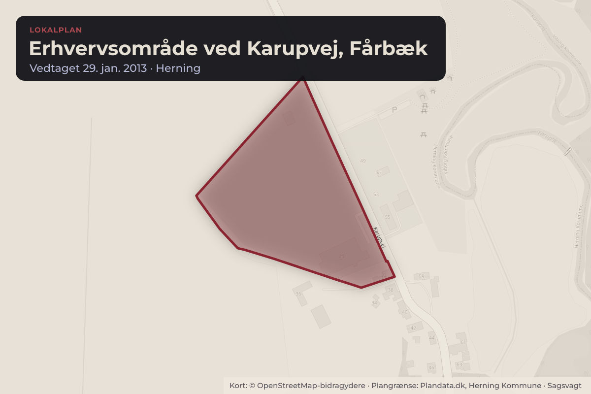
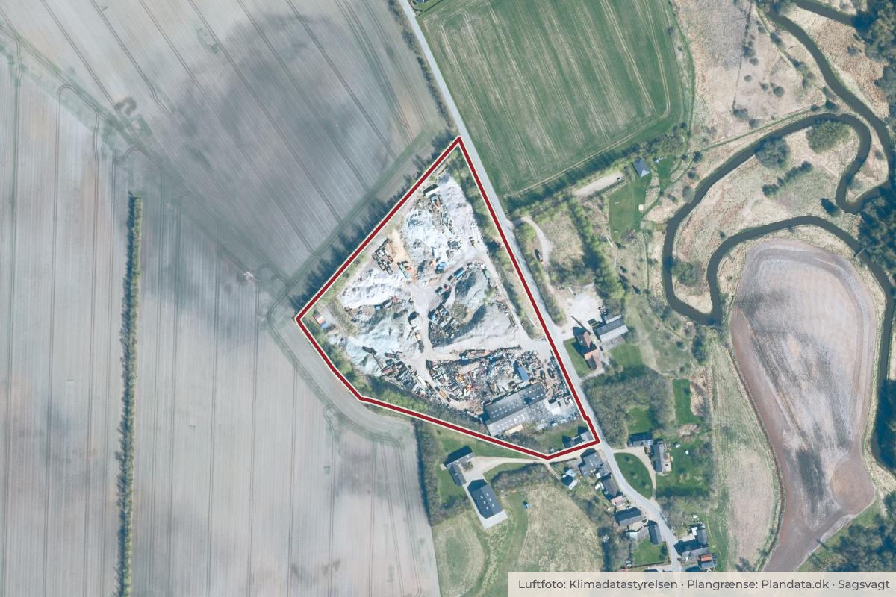

På dagsordenen 23. november, Byplan- og Bosætningsudvalg, Herning
Foreløbig vedtagelse af lokalplan nr. 09.BL18.3 for et erhvervsområde ved Karupvej i Fårbæk
AffaldByggeri og lokalplanerErhverv og job

Kort: © OpenStreetMap-bidragydere. Plangrænse: Plandata.dk, Herning Kommune.

Kort fortalt
- Hvem
- Byplan- og Bosætningsudvalg, Herning Kommune
- Hvornår
- Mandag 23. november 2026
- Status
- På dagsordenen. Sagen behandles på mødet.
Er noget forkert her? Skriv til os
Hvad kan du gøre?
- Skriv til politikerne
- Udvalgets møder er lukkede, men du kan skrive til medlemmerne før mødet mandag 23. november 2026. Du finder dem på herning.dk.
Læs hele sagen Kommunens egen tekst
Baggrund
Lokalplanen udarbejdes på baggrund af J.B. Recyclings ønske om at udvide den eksisterende
virksomhed mod nord som følge af stigende efterspørgsel. Udvidelsen skal give mere plads til
oplag. Virksomheden ønsker desuden at opføre en hal på cirka 1.500 m2 med en højde på
cirka 14 meter på det eksisterende virksomhedsareal. Hallen skal anvendes til tør opbevaring
af affaldsfraktioner og indrettes, så lastbiler kan køre direkte ind og tippe.
Lokalplanområdet
Lokalplanområdet ligger i den nordlige del af Fårbæk og grænser mod nord og vest op til det
åbne land, mod øst til Karupvej og mod syd til den øvrige del af Fårbæk. Planområdet omfatter
matrikel nr. 3ai og en del af matrikel nr. 3ar, begge Fårbæk By, Haderup. Lokalplanområdet
udgør cirka 57.000 m2 og forbliver i landzone.
Lokalplanområdet og de nære omgivelser
Lokalplanområdet
Den sydlige matrikel med boligbebyggelse nr. 3i (Fårbæk By, Haderup) har tidligere været en
del af lokalplanens afgrænsning, men er udgået da det er blevet vurderet at den ikke er
relevant for planlægningen.
Lokalplanens formål
Lokalplanens formål er at give mulighed for udvidelse af en eksisterende affalds- og
genanvendelsesvirksomhed i landzone samt at fastsætte rammer for bebyggelsens placering,
omfang og fremtræden.
Lokalplanen skal samtidig forebygge miljøkonflikter, sikre en landskabelig afskærmning mod
det åbne land og fastholde området i landzone. Planen regulerer blandt andet landskabelig
afskærmning, beplantning og håndtering af arealer, hvor der kan forekomme forurenende
stoffer.
Lokalplanens indhold
Lokalplanen giver mulighed for at udvide virksomhedsarealet mod nord og opføre ny
bebyggelse inden for to byggefelter. Inden for byggefelt 1 kan bebyggelse opføres i op til 14
meters højde, mens bebyggelse inden for byggefelt 2 kan opføres i op til 8,5 meters højde.
Bebyggelsesprocenten må højst være 10 for lokalplanområdet som helhed.
Området vejbetjenes via de eksisterende adgange fra Karupvej.
Lokalplanen stiller krav om afskærmende vold, mure og beplantning for at begrænse den
visuelle påvirkning af omgivelserne.
Lokalplanen har bonusvirkning for de nye forhold, som er omfattet af planens bestemmelse
herom, på vilkår om fjernelse og tilbageførsel ved ophør af den erhvervsmæssige anvendelse.
Eksisterende bebyggelse og anlæg vist på kortbilag 3 er ikke omfattet af bonusvirkningen.
Lokalplanen erstatter ikke nødvendige tilladelser efter anden lovgivning. Afhængigt af de
konkrete tiltag kan der være behov for dispensation fra åbeskyttelseslinjen og skovbyggelinjen.
Forslag til lokalplan
Gældende plangrundlag
Lokalplanområdet er omfattet af rammeområde 09.BL18 i Herning Kommuneplan 2025-2036.
Da lokalplanområdet udvides mod nord, udarbejdes kommuneplantillæg nr. 20, som udvider
rammeområdets geografiske afgrænsning og fastsætter en maksimal bebyggelsesprocent på
15 for de større erhvervsarealer. Kommuneplanrammen giver mulighed for virksomheder inden
for miljøklasse 1-5. Lokalplanen afgrænser anvendelsen til affalds- og
genanvendelsesvirksomhed, som skal kunne indplaceres i miljøklasse 3-5.
Nuværende kommuneplanrammer (tv.) og fremtidige (th.)
Om rammeområde 09.BL18 er der udlagt en konsekvenszone omkring produktions-, transportog logistikerhverv. Konsekvenszonen tilpasses den udvidede afgrænsning af rammeområdet.
En del af konsekvenszonen rækker ind i Viborg Kommune.
Fremtidig konsekvenszone. Rødlig stiplet linje markerer den nuværende konsekvenszones afgrænsning
Lokalplanområdet er omfattet af lokalplan nr. 09.BL18.1, som udlægger området til
erhvervsformål (se blå signatur nedenfor). Ved vedtagelse af lokalplan 09.BL18.3 (angivet med
hvid stiplet linje på kortet nedenfor) aflyses lokalplan nr. 09.BL18.1 i sin helhed.
Afgrænsning af lokalplan nr. 09.BL18.1 (hvid stiplet linje).
Indstilling
DIREKTØREN FOR BY, ERHVERV OG KULTUR INDSTILLER,
at forslag til lokalplan nr. 09.BL18.3 for et erhvervsområde ved Karupvej i Fårbæk
indstilles til foreløbig vedtagelse.
Kilde: Herning Kommune, Byplan- og Bosætningsudvalg, dagsorden fra mødet mandag 23. november 2026, punkt 4. Læs den originale sag hos kommunen.
Steder i sagen: Karupvej